Supervised learning using generative models in pmtk3
Generative models for classification/ regression are joint models of the outputs and inputs of the form 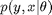. We consider various examples below.
Contents
Naive Bayes classifier
We now a simple kind of generative classifier called naive Bayes, which is a model of the form
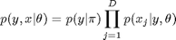
We can fit and predict with this model using naiveBayesFit.m and naiveBayesPredict.m For simplicity, the current implementation assumes all the features are binary, so 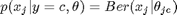. It fits by MAP estimation with a vague Dirichlet prior (add-one-smoothing). Typically results are not too sensitive to the setting of this prior (unlike discriminative models).
Below is an example (from naiveBayesBowDemo.m ) which fits a model to some bag of words data, and then classifies a test set.
loadData('XwindowsDocData'); % 900x600, 2 classes Xwindows vs MSwindows Xtrain = xtrain; Xtest = xtest; model = naiveBayesFit(Xtrain, ytrain); ypred_train = naiveBayesPredict(model, Xtrain); err_train = mean(zeroOneLossFn(ytrain, ypred_train)); ypred_test = naiveBayesPredict(model, Xtest); err_test = mean(zeroOneLossFn(ytest, ypred_test)); fprintf('misclassification rates on train = %5.2f pc, on test = %5.2f pc\n', ... err_train*100, err_test*100);
misclassification rates on train = 8.33 pc, on test = 18.67 pc
See also naiveBayesMnistDemo.m for application of NBC to classify binarized MNIST digits.
It is simple to modify NBC to handle missing data in X at training and test time; this is left as an exercise to the reader.
Discriminant analysis
Discriminant analysis is a generative classifier where the class conditional density is a multivariate Gaussian:
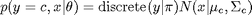
PMTK supports the following variants of this model:
| Type | Description |
| QDA | 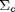 is different for each class. Induces quadratic decision boundaries. |
| LDA | 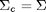 is the same (tied) for each class. Induces linear decision boundaries. |
| DDA | is diagonal, so the features are conditionally independent; this is an example of a naive Bayes classifier. Induces linear decision boundaries. |
| RDA | Regularized LDA; uses MAP estimation for 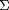. |
| shrunkenCentroids | Diagonal LDA with L1 shrinkage on offsets (see below) |
We give more details below.
QDA/ LDA/ NBC
Below we give an example (from discrimAnalysisFisherIrisDemo.m ) of how to fit a QDA/LDA/ diagDA model. We apply it to a subset of the Fisher Iris dataset.
loadData('fisherIrisData') X = meas(51:end, 1:2); % for illustrations use 2 species, 2 features labels = species(51:end); [y, support] = canonizeLabels(labels); types = {'quadratic', 'linear', 'diag'}; for tt=1:length(types) model = discrimAnalysisFit(X, y, types{tt}); h = plotDecisionBoundary(X, y, @(Xtest)discrimAnalysisPredict(model, Xtest)); title(sprintf('Discrim. analysis of type %s', types{tt})); if ~isOctave legend(h, support, 'Location', 'NorthWest'); set(gca, 'Xtick', 5:8, 'Ytick', 2:0.5:4); end xlabel('X_1'); ylabel('X_2'); end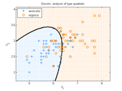 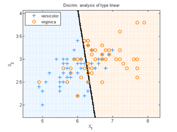 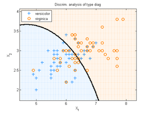
Regularized discriminant analysis
When fitting a discriminant analysis model we will encounter numerical problems when estimating when N < D, even if we use a tied covariance matrix (i.e., one shared across classes, a method known as linear discriminant analysis). A simple solution is to use a Wishart prior to compute a MAP estimate of . This is called regularized discriminant analysis, and can be fit using discrimAnalysisFit(X, y, 'rda', lambda), where lambda controls the amount of regularization. See cancerHighDimClassifDemo.m for an example, which reproduces table 18.1 from Elements of statistical learning 2nd edn p656. (We don't run this demo here since it requires computing the SVD of Xtrain (which has size 144* 16063, with 14 classes) which takes more seconds than we are willing to wait (about 40 sec)).
Nearest shrunken centroid
Consider a naive Bayes model in which the diagonal covariance is tied. This has O(D) parameters for the covariance, but O(C D) for the mean. To prevent overfitting, we can shrink the class-conditional means towards the overall mean; this technique is called nearest shrunken centroids. We can fit this model using discrimAnalysisFit(X, y, 'shrunkenCentroids', lambda). We given an example of this below (from shrunkenCentroidsSRBCTdemo.m ), where we apply the method to the SRBCT gene microarray dataset, whose training set has size 63*2308 with C=4 classes. This roughly reproduces figure 18.4 from Elements of statistical learning 2nd edn p656.
close all; clear all; loadData('srbct'); Xtest = Xtest(~isnan(ytest), :); ytest = ytest(~isnan(ytest)); fitFn = @(X,y,lam) discrimAnalysisFit(X, y, 'shrunkenCentroids', 'lambda',lam); predictFn = @(model, X) discrimAnalysisPredict(model, X); lambdas = linspace(0, 8, 20); nTrain = length(ytrain); nTest = length(ytest); for i=1:length(lambdas) model = fitFn(Xtrain, ytrain, lambdas(i)); yhatTrain = predictFn(model, Xtrain); yhatTest = predictFn(model, Xtest); errTrain(i) = sum(zeroOneLossFn(yhatTrain, ytrain))/nTrain; errTest(i) = sum(zeroOneLossFn(yhatTest, ytest))/nTest; numgenes(i) = sum(model.shrunkenCentroids(:) ~= 0); end figure; plot(lambdas, errTrain, 'gx-', lambdas, errTest, 'bo--',... 'MarkerSize', 10, 'linewidth', 2) legend('Training', 'Test', 'Location', 'northwest'); xlabel('Amount of shrinkage') ylabel('misclassification rate') title('SRBCT data')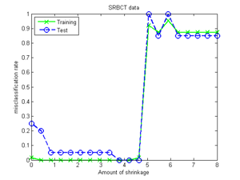
We can also visualize the MAP (blue) and ML (gray) estimate of the means for each class.
bestModel = fitFn(Xtrain, ytrain, 4); centShrunk = bestModel.shrunkenCentroids; model = fitFn(Xtrain, ytrain, 0); centUnshrunk = model.shrunkenCentroids; [numGroups D] = size(centShrunk); for g=1:3 % numGroups %subplot(4,1,g); figure; hold on; plot(1:D, centUnshrunk(g,:), 'Color', [.8 .8 .8]); plot(1:D, centShrunk(g,:), 'b', 'LineWidth', 2); title(sprintf('Class %d', g)); hold off; printPmtkFigure(sprintf('shrunkenCentroidsClass%d', g)) end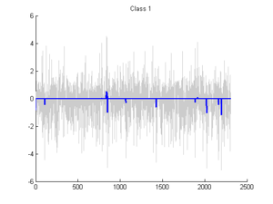 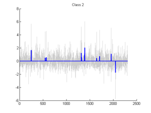 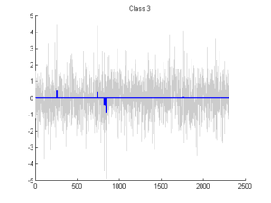
Robust discriminant analysis
We can use any joint probability model for the class conditional density in a generative classifier. To train we just call generativeClassifierFit(fitFn, X, y) where fitFn fits 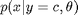. To predict we just call [yhat, post] = generativeClassifierPredict(logprobFn, model, Xtest), where logprobFn computes .
As a simple example, we can make each class conditional density be a Student distribution, to implement robust discriminant analysis. Here is part of robustDiscrimAnalysisBankruptcyDemo.m which illustrates the syntax:
modelS = generativeClassifierFit(@studentFit, Xtrain, ytrain) [yhat] = generativeClassifierPredict(@studentLogprob, modelS, Xtest)
Now we run the entire demo, which uses Student and Gaussian class conditional densities, as well as the QDA code. We see that the Student distribution is more robust than the Gaussian, and that the QDA code gives the same results as using a Gaussian model inside the generative classifier code, as it should
robustDiscrimAnalysisBankruptcyDemo
Num Errors using Student: 2 Num Errors using Gaussian: 3 Num Errors using QDA: 3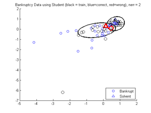 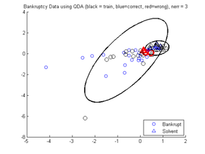
Using HMMs as class conditional densities
As a more interesting example, consider the problem of classifying time series, such as spoken digits. Since each data vector has variable length, it is natural to use a Markov or hidden Markov model for the class conditional densities. (HMMs are discussed in more detail tutLVM.html .) For real-valued data, a linear-Gaussian Markov model is not expressive enough, but an HMM with Gaussian emissions is quite flexible.
Suppose we have two sequences, corresponding to the spoken words "four" and "five". We can train and test the model using the code below (from isolatedWordClassificationWithHmmsDemo.m ). It fits two HMMs, one per class.
loadData('data45'); % Xtrain{i} is a 13 x T(i) sequence of MFCC data, where T(i) is the length nstates = 5; setSeed(0); Xtrain = [train4'; train5']; ytrain = [repmat(4, numel(train4), 1) ; repmat(5, numel(train5), 1)]; [Xtrain, ytrain] = shuffleRows(Xtrain, ytrain); Xtest = test45'; ytest = labels'; [Xtest, ytest] = shuffleRows(Xtest, ytest); % Initial Guess for params pi0 = [1, 0, 0, 0, 0]; transmat0 = normalize(diag(ones(nstates, 1)) + ... diag(ones(nstates-1, 1), 1), 2); % Fit fitArgs = {'pi0', pi0, 'trans0', transmat0, 'maxIter', 10, 'verbose', true}; fitFn = @(X)hmmFit(X, nstates, 'gauss', fitArgs{:}); model = generativeClassifierFit(fitFn, Xtrain, ytrain); % Predict logprobFn = @hmmLogprob; [yhat, post] = generativeClassifierPredict(logprobFn, model, Xtest); nerrors = sum(yhat ~= ytest)
initializing model for EM
1 loglik: -136774
2 loglik: -80469.3
3 loglik: -75503.9
4 loglik: -73980.4
5 loglik: -73064.5
6 loglik: -72316.7
7 loglik: -71873.3
8 loglik: -71498.2
9 loglik: -71272.6
10 loglik: -71173.4
11 loglik: -71122.6
initializing model for EM
1 loglik: -150882
2 loglik: -99493.4
3 loglik: -89818
4 loglik: -88251.6
5 loglik: -88045.9
6 loglik: -87758.7
7 loglik: -87518.5
8 loglik: -87350
9 loglik: -87241.1
10 loglik: -87097.6
11 loglik: -86920.6
nerrors =
0
K-nearest neighbor classifier
One can view a KNN classifier as a generative classifier where the class conditional density is a non-parametric kernel density estimator. Below we give an example where we apply a 1-NN classifier to a subset of the MNIST digit set (from mnistKNNdemo.m : see mnist1NNdemo.m for special-purpose code that can handle the full dataset).
loadData('mnistAll'); trainndx = 1:10000; testndx = 1:1000; ntrain = length(trainndx); ntest = length(testndx); Xtrain = double(reshape(mnist.train_images(:,:,trainndx),28*28,ntrain)'); Xtest = double(reshape(mnist.test_images(:,:,testndx),28*28,ntest)'); ytrain = (mnist.train_labels(trainndx)); ytest = (mnist.test_labels(testndx)); clear mnist trainndx testndx; % save space m = knnFit(Xtrain, ytrain, 1); ypred = knnPredict(m, Xtest); errorRate = mean(ypred ~= ytest); fprintf('Error Rate: %.2f%%\n',100*errorRate);
Error Rate: 8.00%
Below are the test error rates and running times (train + test) for 1NN on different sizes of training and test data (generated using mnist1NNdemo.m ). Note that the standard training set is 60k and the standard test set is 10k. Reassuringly, our error rate of 3.09% for 1NN on this standard train/ test split is the same as that reported by Kenneth Wilder at this league table.
| Ntrain | Ntest | Error rate | Time |
| 60k | 10k | 3.09% | 255s |
| 60k | 1k | 3.80% | 8s |
| 10k | 1k | 8.00% | 1.39s |
From this, we see that increasing the size of the training set dramatically reduces the error rate (perhaps a symptom of overfitting?). Also, increasing the size of the test set dramatically increases the cost of testing (due to the need to loop over mini-batches of examples, to save memory).
This page was auto-generated by calling pmtkPublish(tutGenClassif) on 08-Sep-2010 17:28:54